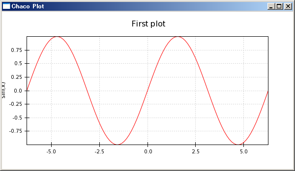
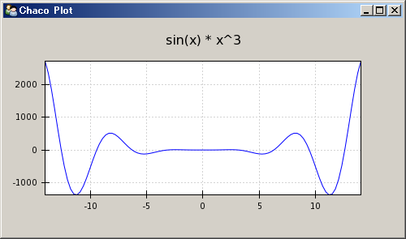
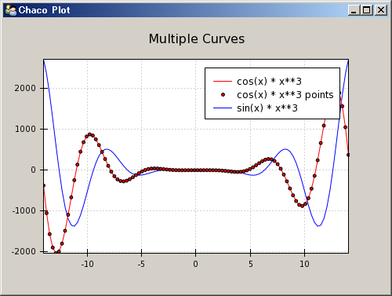
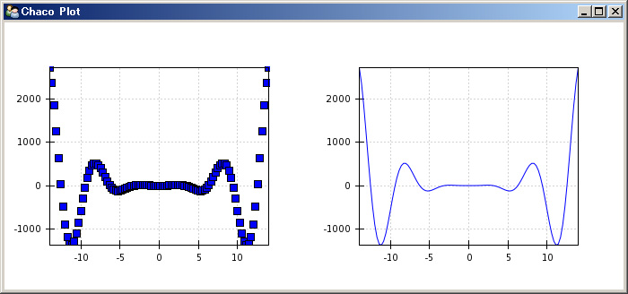
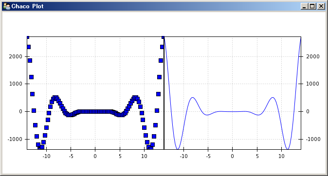

Chaco-交互式图表
Chaco是一个2D的绘图库，如果你安装了Python(x,y)的话，可以在pythonxy的安装目录下的找到Chaco的demo程序:
import numpy as np
from enthought.chaco.shell import *
x = np.linspace(-2*np.pi, 2*np.pi, 100)
y = np.sin(x)
plot(x, y, "r-")
title("First plot")
ytitle("sin(x)")
show()

用Chaco的脚本绘图方式快速绘制正弦波
plot函数的第三个参数中的"r"指定绘图的颜色为红色，"-"指定绘图的线型为实线。title函数为绘图添加标题，ytitle为Y轴添加标题，show()函数最终显示绘图结果。
脚本绘图不是Chaco的强项，虽然它的这套脚本绘图API和Matplotlib的pylab类似，不过它提供的功能却没有pylab丰富。Chaco的优势在于它可以很方便地嵌入到你的应用程序之中，开发出自己独特的绘图应用。
面向应用绘图
要将Chaco嵌入到别的应用程序之中，需要做一些额外的工作，因此代码量比面向脚本绘图要多，不过同时也更具有灵活性。先来看一个例子:
from enthought.traits.api import HasTraits, Instance
from enthought.traits.ui.api import View, Item
from enthought.chaco.api import Plot, ArrayPlotData
from enthought.enable.component_editor import ComponentEditor
from numpy import linspace, sin
class LinePlot(HasTraits):
plot = Instance(Plot)
traits_view = View(
Item('plot',editor=ComponentEditor(), show_label=False),
width=500, height=500, resizable=True, title="Chaco Plot")
def __init__(self):
super(LinePlot, self).__init__()
x = linspace(-14, 14, 100)
y = sin(x) * x**3
plotdata = ArrayPlotData(x=x, y=y)
plot = Plot(plotdata)
plot.plot(("x", "y"), type="line", color="blue")
plot.title = "sin(x) * x^3"
self.plot = plot
if __name__ == "__main__":
LinePlot().configure_traits()
上面这段代码绘制如下的曲线:

用Chaco的面向对象的方式绘制曲线
这段代码看起来似乎挺复杂，其实只要掌握了其基本设计思想，就很容易理解了。首先是许多import语句，为了保持应用程序的名字空间整洁以及让自动语法检查工具能帮助我们检查代码，这些语句只import了需要的对象。
- HasTraits, Instance：这两个从traits库中导入，HasTraits是所有拥有Trait属性的类的父类，我们自己定义的LinePlot类继承于它。而Instance用来创建一个Trait属性，此属性的值为某个指定的类的实例。
- View, Item：从traits.ui库导入，View用来创建一个生成用户界面用的视图，而Item则用来定义视图中的元素。
- Plot, ArrayPlotData：从chaco库中导入，Plot本身是一个描述绘图的类，它的祖先类中有HasTraits，因此它本身也是一个拥有trait属性的类，ArrayPlotData是用来统一保存绘图所用的数据的类。也就是说Plot管理绘图，而ArrayPlotData则用来管理绘图所用的数据。
- ComponentEditor：从enable库中导入，用户界面视图中使用ComponentEditor来显示LinePlot类的plot属性。如果trait属性为Int、Str或者Float之类的简单类型的话，系统能够自动的帮我们选择对应的GUI元素来显示它们。但是系统不知道如何显示Chaco中定义的Plot这样的的类型，因此我们必须手工指定采用ComponentEditor来显示Plot。
- linspace, sin：从numpy库中导入，linspace用来产生一个等差数列，numpy中的sin函数可以自动对数组中的每个元素进行计算。
接下来的代码部分:
class LinePlot(HasTraits):
plot = Instance(Plot)
首先定义一个LinePlot继承于HasTraits，并且它有一个trait属性plot为Plot类的实例。然后定义视图:
traits_view = View(
Item('plot',editor=ComponentEditor(), show_label=False),
width=500, height=500, resizable=True, title="Chaco Plot")
此视图在LinePlot类中定义，因此在调用configure_traits的时候就不需要指定视图了。视图中有一个元素，它将用来显示名为plot的属性的内容，视图中的元素用Item创建。注意这里使用字符串指定视图元素所对应的属性。然后通过关键字参数editor指定此视图元素采用ComponentEditor进行显示。并且不显示其标签(show_label=False)。通过View的关键字参数width、height、resizable和title分别指定界面的宽、高、是否可改变大小以及其窗口标题栏的文字。
接下来看构造函数，真正的计算在这里:
def __init__(self):
super(LinePlot, self).__init__()
x = linspace(-14, 14, 100)
y = sin(x) * x**3
plotdata = ArrayPlotData(x=x, y=y)
在构造函数做其它事情之前，一定要记住调用父类的构造函数，这样HasTraits的功能才能真正在我们的实例中出现。
接下来和脚本绘图一样，计算出绘图所需的x,y坐标的数值数组。然后将这两个数组存到一个ArrayPlotData对象中。ArrayPlotData和字典(dict)有些类似，它将一个字符串(数组的名字)和数组本身联系起来。而真正的绘图对象plot将通过数组的名字在ArrayPlotData中获得数组的内容。这样做就在数据和绘图对象中形成了一个接口界面，修改ArrayPlotData中的数组的值将会立即反应到与此数据相连的绘图对象，而多个绘图对象可以共用ArrayPlotData中的同一数组。
接下来创建绘图对象plot，并且将我们创建的ArrayPlotData实例传递给它，此后plot将在此实例中获取自己绘图所需的数据。:
plot = Plot(plotdata)
Plot类将Chaco中提供的许多真正用来绘图的对象进行包装，提供了一个统一的接口用来创建和管理这些绘图对象。在今后深入学习Chaco的过程中我们将通过分析Plot类的实现来了解Chaco库的设计思想。
接下来调用plot方法在Plot内部创建真正的绘图对象(一个曲线图):
plot.plot(("x", "y"), type="line", color="blue")
注意我们传递给plot方法的是数组的名字而不是数组本身，Plot对象会自动通过数组的名字在ArrayPlotData的实例中找到其对应的数组。
然后设置绘图的标题，并且把绘图实例赋值给plot属性:
plot.title = "sin(x) * x^3"
self.plot = plot
最后是LinePlot对象的实例化和调用configure_trait显示绘图窗口:
if __name__ == "__main__":
LinePlot().configure_traits()
由于没有给configure_traits传递视图参数，它将在LinePlot实例中寻找视图的定义，于是它找到traits_view，并且用此视图来显示LinePlot实例的trait属性。于是plot属性将如traits_view中定义的一样，用ComponentEditor显示。
采用和LinePlot类同样的模式，我们可以绘制更多的曲线图：
from enthought.traits.api import HasTraits, Instance
from enthought.traits.ui.api import View, Item
from enthought.chaco.api import Plot, ArrayPlotData, Legend
from enthought.enable.component_editor import ComponentEditor
from numpy import linspace, sin, cos
class LinePlot(HasTraits):
plot = Instance(Plot)
traits_view = View(
Item('plot',editor=ComponentEditor(), show_label=False),
width=500, height=500, resizable=True, title="Chaco Plot")
def __init__(self):
super(LinePlot, self).__init__()
x = linspace(-14, 14, 100)
y1 = sin(x) * x**3
y2 = cos(x) * x**3
plotdata = ArrayPlotData(x=x, y1=y1, y2=y2)
plot = Plot(plotdata)
plot.plot(("x", "y1"), type="line", color="blue", name="sin(x) * x**3")
plot.plot(("x", "y2"), type="line", color="red", name="cos(x) * x**3")
plot.plot(("x", "y2"), type="scatter", color="red", marker = "circle",
marker_size = 2, name="cos(x) * x**3 points")
plot.title = "Multiple Curves"
self.plot = plot
legend = Legend(padding=10, align="ur")
legend.plots = plot.plots
plot.overlays.append(legend)
if __name__ == "__main__":
lineplot = LinePlot()
lineplot.configure_traits()

绘制多条曲线并且添加图示
在这个程序中，我们调用了3次plot.plot方法，其中两次的type="line"绘制曲线，一次是type="scatter"绘制坐标点。绘制坐标点时通过marker和marker_size配置点的形状和大小。并且我们为每个plot传递了一个name参数。
为了绘制图示(legend)，从chaco.api中载入Legend之后，使用如下三行代码为坐标图添加图示：:
legend = Legend(component=plot, padding=10, align="ur")
legend.plots = plot.plots
plot.overlays.append(legend)
其中第一行创建一个Legend对象，并且设置padding和align两个属性，padding设置其内容与边框之间的距离，align设置其在容器中的位置: upper right。
为了让legend对象知道要显示什么曲线的图示，我们需要把曲线对象传递给它。三次调用plot绘制的曲线可以通过plot对象plots属性得到，在iPython中运行完上面的程序之后，输入lineplot.plot.plots查看plots属性的值:
>>> lineplot.plot.plots
{'cos(x) * x**3 points': [<enthought.chaco.scatterplot.ScatterPlot object at 0x1436B4B0>],
'cos(x) * x**3': [<enthought.chaco.lineplot.LinePlot object at 0x1436B120>],
'sin(x) * x**3': [<enthought.chaco.lineplot.LinePlot object at 0x143140F0>]}
我们将plot.plots传递给legend.plots，于是legend就知道要显示哪些曲线的图示了。
最后我们将legend对象添加到plot.overlays中。整个绘图区域分为许多层，每一层放置不同的绘图元素，overlays是最上面的一层，其中放置在屏幕坐标系中的绘图元素。plot的overlays属性为一个TraitListObject类的对象，它继承于list类，具有list的所有能力，因此可以用append方法将绘图元素添加进overlays层。
容器(Container)概述
在Chaco的实现中，Plot类继承于DataView类，而DataView类继承于OverlayPlotContainer类，因此Plot本身就是一个容器。可以把OverlayPlotContainer想象成多张透明绘图纸，我们在多张纸上绘图，然后通过OverlayPlotContainer容器将这些纸张重叠起来，就组成了最终所绘制的图。
除了OverlayPlotContainer容器之外，Chaco还提供了下面几种容器：
- HPlotContainer：内容横向排列的容器
- VPlotContainer：内容竖向排列的容器
- GridPlotContainer：内容按照网格排列的容器
下面让我们来看一个用HPlotContainer的例子：
from enthought.traits.api import HasTraits, Instance
from enthought.traits.ui.api import View, Item
from enthought.chaco.api import HPlotContainer, ArrayPlotData, Plot
from enthought.enable.component_editor import ComponentEditor
from numpy import linspace, sin
class ContainerExample(HasTraits):
plot = Instance(HPlotContainer)
traits_view = View(Item('plot', editor=ComponentEditor(), show_label=False),
width=1000, height=600, resizable=True, title="Chaco Plot")
def __init__(self):
super(ContainerExample, self).__init__()
x = linspace(-14, 14, 100)
y = sin(x) * x**3
plotdata = ArrayPlotData(x=x, y=y)
scatter = Plot(plotdata)
scatter.plot(("x", "y"), type="scatter", color="blue")
line = Plot(plotdata)
line.plot(("x", "y"), type="line", color="blue")
container = HPlotContainer(scatter, line)
self.plot = container
if __name__ == "__main__":
ContainerExample().configure_traits()

用容器绘制两个子图
这个程序和前面的例子类似，所不同的是：ContainerExample的plot属性不是Plot的实例，而是改为HPlotContainer的实例。这样它就可以横向排列多个图了。
在__init__函数中，用创建两个Plot对象scatter和line，然后创建HPlotContainer对象container，并把两个plot对象传递给它，这样container就知道要水平排列哪些图了。
每个容器都有很多属性可以设置，如果我们在__init__函数最后添加如下几行程序：:
scatter.padding_right = 0
line.padding_left = 0
line.y_axis.orientation = "right"

修改两个容器的左右padding值，使它们紧靠在一起
我们看到两个Plot之间的间距没有了，他是通过设置容器左图(scatter)的右边距为0，右图(line)的左边距为0来实现的。 并且将右图的Y轴坐标设置到了右边。
编辑绘图属性
到目前为止所绘制的图都是静态的，一旦创建出来就没有办法改变其各种显示属性了。Chaco库是建立在Traits库基础之上的，我们看到的各种各样的对象的属性都是trait属性，这样我们可以使用Traits和TraitsUI的强大功能设置对象的各种属性，下面是一个完整的例子：
from enthought.traits.api import HasTraits, Instance, Int, Color
from enthought.traits.ui.api import View, Group, Item
from enthought.enable.component_editor import ComponentEditor
from enthought.chaco.api import marker_trait, Plot, ArrayPlotData
from numpy import linspace, sin
class ScatterPlotTraits(HasTraits):
plot = Instance(Plot)
color = Color("blue")
marker = marker_trait
marker_size = Int(4)
traits_view = View(
Group(Item('color', label="Color"),
Item('marker', label="Marker"),
Item('marker_size', label="Size"),
Item('plot', editor=ComponentEditor(), show_label=False),
orientation = "vertical"),
width=800, height=600, resizable=True, title="Chaco Plot")
def __init__(self):
super(ScatterPlotTraits, self).__init__()
x = linspace(-14, 14, 100)
y = sin(x) * x**3
plotdata = ArrayPlotData(x = x, y = y)
plot = Plot(plotdata)
self.renderer = plot.plot(("x", "y"), type="scatter", color="blue")[0]
self.plot = plot
def _color_changed(self):
self.renderer.color = self.color
def _marker_changed(self):
self.renderer.marker = self.marker
def _marker_size_changed(self):
self.renderer.marker_size = self.marker_size
if __name__ == "__main__":
ScatterPlotTraits().configure_traits()
为了观察trait控件是如何动态地修改绘图的的各个属性，我用flash录制下对控件的操作，请点击下图下方的播放按钮观看动画。
通过观察上面的这个动画，我们发现对颜色、点型和点的大小等属性的修改立即响应到绘图的属性上。下面我们来分析一下这个程序：
ScatterPlotTraits类定义了4个trait属性，其中一个是我们已经熟知的plot属性，其余的三个分别为color，marker和marker_size。color是一个Color属性，marker_size是一个Int属性，marker比较特别，它是在Chaco的scatter_makers.py中定义的一个Trait属性，采用字典创建，将一个描述点型的字符串映射到点型对应的类，这样我们通过界面上的下拉选择框选择某个点型名称时，在程序内部实际上选择的是其对应的类。
接下来第14行在ScatterPlotTraits类内部定义了一个视图对象traits_view。它创建4个Item分别与4个trait属性对应。为了响应trait属性值的改变事件，我们为类添加了3个事件处理函数_color_changed，_marker_changed和_marker_size_changed。这个三个处理函数通过其名字和trait属性对应，即名为foo的trait属性的缺省事件处理函数名为_foo_changed。值得注意的是这三个处理函数是和trait属性相对应的，而不是界面上的控件。当用户更改了控件的内容之后，此更改自动反映为trait属性值的更改，当trait属性的值更改时，事件处理函数将被运行。这样，当处理函数运行的时候，trait属性的值已经是最新的界面上所显示的值了。因此只需要将此值赋值给曲线绘图对象(render)的对应的属性即可。
那么render对象是什么？我们看到它是plot.plot函数的返回值，这个返回值就是图中所画的那条曲线。前面我们演示了通过plot.plots获得过plot中所有的绘图对象。因此不用render保存此返回值，也可以用plot.plots.values()[0]，或者plot.plots["plot0"]来获取这个绘图对象。"plot0"是系统自动为我们的曲线所起的名字。